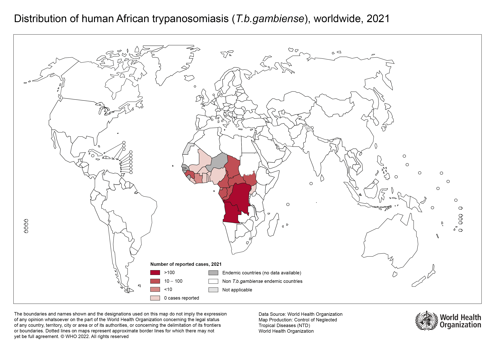
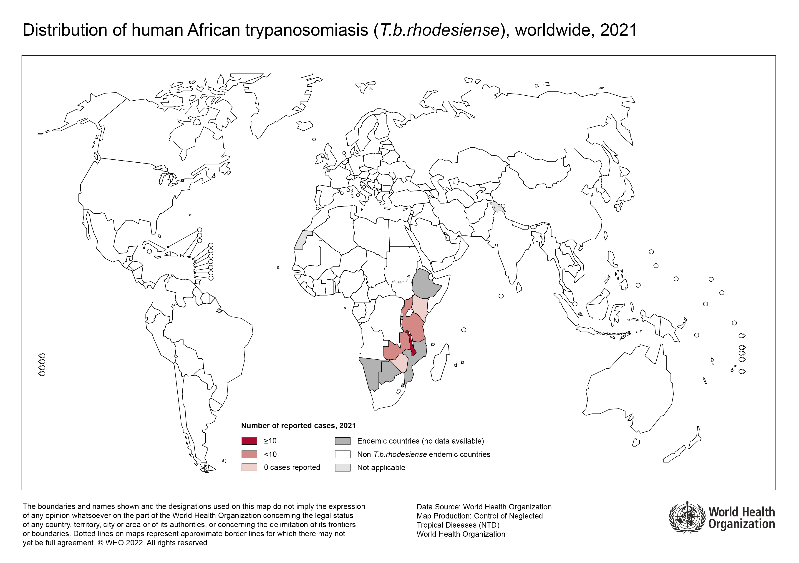

Trypanosomiase africaine
Maladie du sommeil — Trypanosoma brucei gambiense & T. b. rhodesiense
Deux maladies très différentes sous un même nom : la g-THA chronique d'Afrique de l'Ouest et la r-THA aiguë d'Afrique de l'Est. Sans traitement, presque toujours mortelle. Révolution thérapeutique en cours avec le fexinidazole (oral, 10 jours) et l'acoziborole (dose unique).
Épidémiologie
Vue d'ensemble
- Deux sous-espèces : T. b. gambiense (92 % des cas, Afrique de l'Ouest/Centrale) et T. b. rhodesiense (8 %, Afrique de l'Est/Australe)[1,2]
- Réduction de 97 % des cas en 20 ans : de ~37 000 cas/an (1998) à 837 cas rapportés de g-THA en 2022[3]
- Maladie tropicale négligée ciblée par l'OMS pour élimination d'ici 2030
- 36 pays endémiques ; la glossine (mouche tsé-tsé) est absente hors d'Afrique sub-saharienne
Progrès vers l'élimination
Pays ayant obtenu la validation OMS de l'élimination comme problème de santé publique :
Togo (2020), Côte d'Ivoire (2020), Bénin (2021), Ouganda (2022), Guinée équatoriale (2022), Ghana (2023), Tchad (2024), Guinée (2025), Kenya (2025 — première élimination validée pour la r-THA)[5-8]
| Sous-espèce | Régions endémiques | Réservoir | Forme clinique |
|---|---|---|---|
| T. b. gambiense | Afrique de l'Ouest & Centrale (RDC, Guinée, Centrafrique, Tchad, Angola, Soudan du Sud) | Principalement humain (anthroponotique) | Chronique (mois à années) |
| T. b. rhodesiense | Afrique de l'Est & Australe (Ouganda, Tanzanie, Malawi, Zambie, Zimbabwe, Mozambique) | Zoonotique (bétail, antilopes, faune sauvage) | Aiguë (semaines) |
Cas importés en pays non endémiques
- 49 cas dans 16 pays non endémiques entre 2011 et 2020[9]
- r-THA (35 cas) : principalement touristes en safari en Afrique de l'Est (Tanzanie, Ouganda, Kenya, Zambie, Zimbabwe)
- g-THA (14 cas) : principalement migrants africains, diagnostic souvent tardif au stade 2
- En Suisse : centre de référence mondial (Swiss TPH Bâle) ; médicaments anti-trypanosomiens non disponibles en pharmacie, obtenus via l'OMS
⚠ Cas récents (2024–2025)
- MMWR 2025 : voyageur américain, vallée du Zambezi (Zimbabwe) — r-THA + 3 autres cas signalés dans la même zone[10]
- Norvège 2024 : homme, défaillance multi-organique au J3 ; TDR paludisme négatif ; trypanosomes au frottis sanguin ; traité par suramine avec succès[11]
- Éthiopie 2024 : réémergence de r-THA — premiers cas rapportés depuis des années[12]
Répartition géographique
Trypanosoma brucei gambiense

Trypanosoma brucei rhodesiense

Transmission & incubation
- Vecteur : mouche tsé-tsé (Glossina spp.) — piqûre diurne, douloureuse, en milieu extérieur (savane, bords de cours d'eau, parcs nationaux)
- La glossine pique à travers les vêtements fins et est attirée par les couleurs sombres et le mouvement
- Réservoir g-THA : essentiellement humain (porteurs asymptomatiques possibles)
- Réservoir r-THA : zoonotique — antilopes, phacochères, bétail ; l'humain est un hôte accidentel
- Transmission mère-enfant et par transfusion : exceptionnelle
| Sous-espèce | Incubation |
|---|---|
| T. b. rhodesiense | 3 jours à 3 semaines (médiane ~10 jours) |
| T. b. gambiense | Semaines à mois (parfois > 1 an) |
Présentation clinique
Stade 1 — Hémolymphatique
Chancre trypanosomal (point d'inoculation) :
- Papule/nodule érythémateux, apparaît 2–5 jours après la piqûre, disparaît en 2–3 semaines
- Fréquence chez le voyageur : 84 % dans la r-THA, 47 % dans la g-THA[14]
- Souvent confondu avec un furoncle ou une piqûre d'insecte surinfectée
Signes systémiques :
- Fièvre irrégulière/intermittente (97–98 % des cas chez le voyageur)
- Céphalées, myalgies, arthralgies
- Adénopathies (cervicales postérieures ++ pour g-THA — signe de Winterbottom)
- Hépatosplénomégalie, rash cutané (trypanides), œdème facial
- r-THA : atteinte cardiaque fréquente (myocardite, péricardite, arythmies)
Stade 2 — Méningo-encéphalitique
- Troubles du sommeil : inversion du cycle veille-sommeil (pathognomonique mais rare chez le voyageur : seulement 5–21 %)[14]
- Troubles neuropsychiatriques : confusion, apathie, hallucinations, changements de personnalité
- Troubles moteurs : tremblements, ataxie, hypertonie
- Convulsions, coma → décès sans traitement
⚠ Différence de tempo clinique
- r-THA : progression rapide en jours à semaines ; stade 2 possible en 3–4 semaines. Urgence médicale.
- g-THA : évolution insidieuse sur mois à années ; diagnostic souvent tardif au stade 2 chez les migrants.
Particularités chez le voyageur[14]
| Signe / Symptôme | r-THA (n=45) | g-THA (n=15) |
|---|---|---|
| Fièvre | 97,8 % | 93,3 % |
| Chancre | 84,4 % | 46,7 % |
| Céphalées | 50 % | 50 % |
| Ictère | 24,2 % | 0 % |
| Somnolence diurne | 4,8 % | 0 % |
| Insomnie | 7,1 % | 21,4 % |
⚠ Piège clinique
- L'ictère est un signe d'alerte dans la r-THA chez le voyageur (24 % des cas) — jamais décrit dans les séries endémiques africaines
- Les troubles du sommeil sont rares chez le voyageur — ne pas attendre ce signe pour évoquer le diagnostic
Biologie
- Anémie, thrombopénie, leucopénie ou leucocytose
- Syndrome inflammatoire important (CRP, VS élevées)
- Hypoalbuminémie
- Hypergammaglobulinémie polyclonale (IgM +++) — très évocatrice
- Élévation des transaminases, bilirubine (surtout r-THA)
- Insuffisance rénale, CIVD possibles dans les formes sévères de r-THA
Diagnostic
Principes
- Suspicion clinique : fièvre + voyage en Afrique sub-saharienne + exposition possible aux glossines
- Confirmation parasitologique : mise en évidence des trypanosomes
- Stadification : ponction lombaire pour déterminer l'atteinte du SNC (stade 1 vs 2)
| Méthode | Utilité | Commentaire |
|---|---|---|
| Frottis sanguin / goutte épaisse | Gold standard pour confirmation | Sensibilité élevée pour r-THA (parasitémie souvent élevée) ; plus faible pour g-THA (parasitémie fluctuante) |
| Buffy coat / mAECT | Concentration des parasites | Augmente la sensibilité pour g-THA |
| CATT (agglutination) | Sérologie terrain, g-THA uniquement | Dépistage de masse en Afrique ; ne fonctionne PAS pour r-THA |
| Ponction lombaire (LCR) | Stadification obligatoire | Stade 2 si : trypanosomes dans le LCR, ou leucocytes > 5/µL, ou protéines élevées |
| PCR | Confirmation d'espèce | Distingue gambiense de rhodesiense ; laboratoire de référence |
| Trypanolyse immune | Sérologie de référence (g-THA) | Très spécifique ; IMT Anvers, Swiss TPH |
⚠ Pièges diagnostiques
- Confusion avec le paludisme : la r-THA peut mimer un paludisme sévère. Un TDR paludisme négatif chez un voyageur fébrile d'Afrique de l'Est doit faire évoquer la THA. Les trypanosomes peuvent être découverts sur le frottis réalisé pour le paludisme — informer le laboratoire ![10,11]
- g-THA chez le migrant : tableau insidieux (fatigue, céphalées, fièvre intermittente) souvent étiqueté « dépression » ou « syndrome viral chronique ». Chez tout patient d'Afrique de l'Ouest/Centrale avec symptômes neuropsychiatriques inexpliqués → penser à la g-THA
- Parasitémie fluctuante dans la g-THA : les trypanosomes ne sont pas toujours visibles au frottis — nécessité de techniques de concentration ou de répéter les examens
IRM cérébrale (stade 2)
L'IRM n'est pas un outil diagnostique de première ligne mais aide à évaluer l'atteinte du SNC. Utile en pays non endémique pour le bilan d'un patient avec symptômes neurologiques inexpliqués.
| Séquence | Anomalies | Localisation |
|---|---|---|
| T2 FLAIR | Hypersignal de la substance blanche (anomalie la plus fréquente) | Substance blanche périventriculaire et sous-corticale |
| Diffusion (DWI/ADC) | Restriction de la diffusion | Capsules internes, splénium du corps calleux |
| T1 post-gadolinium | Prise de contraste leptoméningée | Méninges, noyaux gris centraux |
| SWI / T2* | Microhémorragies | Disséminées |
Traitement
Révolution thérapeutique 2019–2026
| Époque | g-THA stade 1 | g-THA stade 2 | r-THA stade 1 | r-THA stade 2 |
|---|---|---|---|---|
| Avant 2009 | Pentamidine | Éflornithine (ou mélarsoprol) | Suramine | Mélarsoprol (létalité ~5 %) |
| 2009–2018 | Pentamidine | NECT | Suramine | Mélarsoprol |
| 2019–2023 | Fexinidazole | Fexinidazole* | Suramine | Mélarsoprol |
| 2024–2026 | Fexinidazole ou acoziborole | Fexinidazole ou acoziborole | Fexinidazole | Fexinidazole |
*g-THA stade 2 non sévère (leucocytes LCR ≤ 100/µL) ; NECT reste indiqué pour les formes sévères
Fexinidazole — Premier traitement oral
- Posologie : 1800 mg/j × 4 jours puis 1200 mg/j × 6 jours (total 10 jours) ; avec un repas
- OMS 1re ligne g-THA depuis 2019, 1re ligne r-THA depuis 2024[17]
- g-THA (phase IIIb, n=174) : efficacité à 18 mois 93,1 % ; traitement ambulatoire potentiellement réalisable[19]
- r-THA (phase II-III, n=46) : létalité stade 2 = 0 % (vs ~8,5 % historique avec mélarsoprol, p=0,049)[20]
Acoziborole — Dose unique
- Dose unique de 3 comprimés (960 mg) — indépendant du stade (pas de PL nécessaire !)
- Phase 2/3 (n=208) : taux de succès à 18 mois 95 % stade 2, 100 % stade 1[21]
- Avis positif EMA (février 2026) — don gratuit via OMS par Sanofi/Foundation S[22]
- Étape décisive vers l'objectif OMS d'interruption de la transmission d'ici 2030
Médicaments historiques
- Pentamidine : g-THA et r-THA stade 1, IM/IV 7–10 jours (hypotension, hypoglycémie)
- Suramine : r-THA stade 1, IV 5 doses sur 5 semaines (néphrotoxicité, hypersensibilité). Désormais 2e ligne
- Mélarsoprol : dérivé arsenical, encéphalopathie réactive mortelle chez 5–10 %. Désormais dernière ligne
- NECT : éflornithine IV 7j + nifurtimox oral 10j ; g-THA stade 2 sévère (leuco LCR > 100)
⚠ Accès aux médicaments
Tous les médicaments anti-THA sont distribués gratuitement par l'OMS. En Suisse, ils ne sont pas disponibles en pharmacie — délai potentiel de 24–48h. En cas de suspicion, contacter immédiatement un centre de référence.
Prévention
- Pas de vaccin (variation antigénique des trypanosomes — VSG)
- Pas de chimioprophylaxie recommandée
- Vêtements couvrants de couleur claire (la glossine est attirée par le bleu et le noir)
- Insectifuges (DEET, icaridine) — efficacité modérée contre les glossines
- Éviter les zones de végétation dense au bord des cours d'eau en journée
- Zones à risque pour le voyageur : safaris en Afrique de l'Est — Serengeti, Tarangire (Tanzanie) ; Masai Mara (Kenya) ; Queen Elizabeth NP (Ouganda) ; vallée du Zambezi (Zambie/Zimbabwe)
Pièges & perles cliniques
TDR paludisme négatif ≠ pas de parasitose
Chez un voyageur fébrile d'Afrique de l'Est avec TDR paludisme négatif, évoquer la THA. Les trypanosomes peuvent être découverts sur le frottis demandé pour le paludisme — informer le laboratoire de la possibilité.
Le chancre peut manquer
Absent dans ~16 % des r-THA et ~53 % des g-THA chez le voyageur. Peut être confondu avec un furoncle ou une piqûre surinfectée.
g-THA : des mois/années après le retour
La g-THA peut se manifester des mois à années après le séjour en Afrique. Chez un migrant ouest-africain avec symptômes neuropsychiatriques inexpliqués, toujours évoquer ce diagnostic.
Ne pas attendre les troubles du sommeil
La somnolence diurne — signe classique de la « maladie du sommeil » — n'est observée que chez 5 % des voyageurs atteints de r-THA. Ce signe est tardif et rare chez le non-endémique.
Conduite pratique pour le médecin de premier recours
En cas de suspicion
- Frottis sanguin + goutte épaisse — demander au laboratoire de rechercher aussi les trypanosomes, pas seulement le paludisme
- Bilan biologique : NFS, CRP, créatinine, transaminases, bilirubine, protéines totales, électrophorèse des protéines (IgM ↑↑)
- Contacter un centre de référence sans attendre si forte suspicion
Morsure de glossine sans symptôme
- Relativement fréquent en safari (la glossine est ubiquitaire dans les parcs)
- Risque de transmission faible par piqûre individuelle
- Proposition : sérologie à J0 et J30 ; consultation si apparition de symptômes (fièvre, chancre, adénopathies)
Quand référer ?
- Toujours — le diagnostic et le traitement de la THA relèvent du spécialiste
- Référer dès la suspicion clinique, sans attendre la confirmation parasitologique
- Les médicaments ne sont pas disponibles en pharmacie et doivent être obtenus via l'OMS
- La r-THA est une urgence médicale
Références
- Lejon V, Lindner AK, Franco JR. Human African trypanosomiasis. Lancet 2025;405:937–950.
- WHO. Trypanosomiasis, human African (sleeping sickness) — fact sheet. 2024.
- Franco JR et al. The elimination of human African trypanosomiasis: Monitoring progress towards the 2021–2030 WHO road map targets. PLoS Negl Trop Dis 2024;18(4):e0012111.
- WHO. Global report on neglected tropical diseases. 2025.
- WHO. Chad eliminates human African trypanosomiasis. Juin 2024.
- WHO. Guinea eliminates human African trypanosomiasis. Janvier 2025.
- DNDi. Disease factsheet 2024 — Sleeping sickness.
- WHO. Kenya achieves elimination of human African trypanosomiasis. Août 2025.
- Franco JR et al. Human African trypanosomiasis cases diagnosed in non-endemic countries (2011–2020). PLoS Negl Trop Dis 2022;16(11):e0010885.
- Wendt EM et al. Rhodesiense HAT in a Traveler Returning from Zimbabwe. MMWR 2025;74(9):158–159.
- Blomberg B et al. A man in his sixties with life-threatening febrile illness after travel abroad. Tidsskr Nor Laegeforen 2024;144(3).
- Abera A et al. Reemergence of HAT Caused by T. b. rhodesiense, Ethiopia. Emerg Infect Dis 2024;30(1):160–163.
- Mudji J et al. HAT in Rural DRC: A Case Report. Trop Med Infect Dis 2019;4(4):142.
- Urech K, Neumayr A, Blum J. Sleeping sickness in travelers — do they really sleep? PLoS Negl Trop Dis 2011;5(11):e1358.
- Sawadogo PM et al. HAT: Epidemiology, Biological Diagnosis and Treatment. Acta Parasitol 2025;70:193.
- Luintel A et al. Nigeria-acquired HAT in United Kingdom, 2016. Emerg Infect Dis 2017;23(7):1225–1227.
- Lindner AK et al. New WHO guidelines for treating rhodesiense HAT. Lancet Infect Dis 2025;25(2):e77–e85.
- WHO. WHO delivers fexinidazole to Malawi and Zimbabwe. Février 2025.
- Kande Betu Kumeso V et al. Effectiveness and safety of fexinidazole for g-THA (phase 3b). Lancet Glob Health 2025;13(5):e900–e909.
- Matovu E et al. Fexinidazole for r-THA (phase 2–3). Lancet Glob Health 2025;13(5):e910–e919.
- Kande Betu Kumeso V et al. Efficacy and safety of acoziborole (phase 2/3). Lancet Infect Dis 2023;23(4):463–470.
- EMA. New single-dose oral treatment for HAT. Février 2026.
- Mwamba Miaka E et al. Fexinidazole: the challenge of accessibility. Lancet Glob Health 2025;13(5):e789–e790.
- Gao J-M et al. HAT: current situation and risks from imported cases. Parasitology 2020;147(9):922–931.
- Sudarshi D, Brown M. HAT in non-endemic countries. Clin Med 2015;15(1):70–73.
- Franco JR (WHO). HAT — Update & outlook. Présentation SSTTM, septembre 2023.
- DNDi/Sanofi. Acoziborole Winthrop receives EMA CHMP positive opinion. Février 2026.
- DNDi. First all-oral treatment for sleeping sickness. 2025.
- Patel NK et al. MRI findings in HAT: a case series. BJR Case Rep 2019;4(4):20180039.
- Luna LP et al. PET/CT and Brain MRI in HAT Encephalitis. Clin Nucl Med 2022;47(1):e26–e28.
- Aidara CM et al. MRI Signal Abnormalities of the Optic Tracts in TG Meningoencephalitis. Open J Radiol 2022;12(1):1–11.
- Sabbah P et al. HAT: MRI. Neuroradiol 1997. / Gill DS et al. AJNR 2003. / HAT MRI and neuropathology. Neurology 2006.
- Paul M et al. Acute East African trypanosomiasis in a Polish traveller. BMC Infect Dis 2014;14:111.
- Mesu VKBK et al. Oral fexinidazole for late-stage g-THA: pivotal trial. Lancet 2018;391:144–154.
- Kande Betu Kumeso V et al. Fexinidazole in children with g-THA. Lancet Glob Health 2022;10(11):e1665–e1674.
- Büscher P et al. Human African trypanosomiasis. Lancet 2017;390:2397–2409.
- Hasker E et al. g-THA: the bumpy road to elimination. Curr Opin Infect Dis 2022;35(5):384–389.
- Ortiz-Martinez Y et al. HAT — Epidemiology, Clinical Manifestations, Diagnosis, Treatment, and Prevention. Curr Trop Med Rep 2023;10(4):222–234.
- Papagni R et al. HAT: Current knowledge and future challenges. Front Trop Dis 2023;4:1087003.
- Elliott I et al. West-African trypanosomiasis in a returned traveller from Ghana. BMJ Case Rep 2014;2014:bcr2014204451.
- WHO. Guidelines for the treatment of HAT. Genève, juin 2024. ISBN 978-92-4-009603-5.
- CDC. Clinical Guidance for HAT. Mise à jour mars 2024.
- CDC DPDx. Trypanosomiasis, African — Laboratory Identification.
- MacLean L et al. Stage Progression and Neurological Symptoms in r-THA. PLoS Negl Trop Dis 2012;6(10):e1857.
- Brun R, Blum J, Chappuis F, Burri C. Human African trypanosomiasis. Lancet 2010;375:148–159.